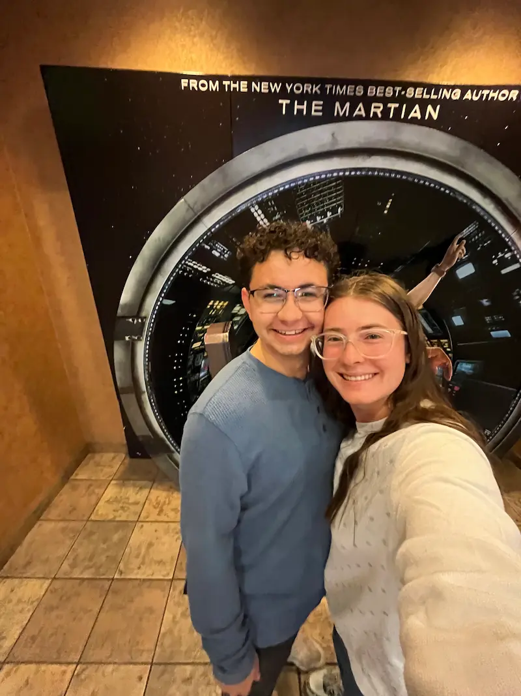

Home
About me
My name is Bailey, I've been doing pathways for a while now. I've actually forgotten how long I've been doing it. My guess is about a year. I recently started a social media. My goal with it is 2 things. One is to hvae fun. I enjoy making videos. But then two, I'd love to make income from it. I'd love for it to replace my current job. So when I have children, I will be able to stay home and raise them. My youtube and instagram page have been linked. If you feel so inclined, you can follow to watch my journey!
Student Photo
